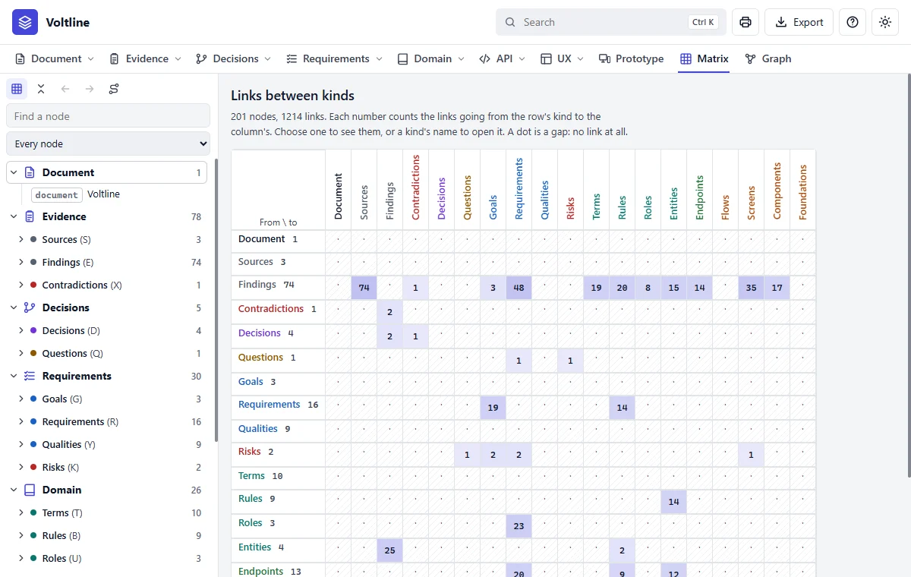
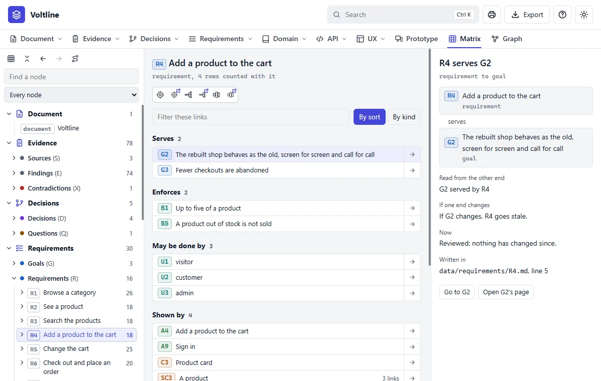

Matrix
In everyday termsThe spreadsheet of who's connected to whom. Picture a table with every kind of fact down the side and across the top. Each cell counts the connections between them, and an empty cell can show a gap.
What it answersExactly which links are there, and what does each one mean?
Use the Matrix when you need to be exact. The Graph shows the shape of things, and the Matrix tells you each link, one at a time.
The grid

- 1The grid icon, first in this row, brings you back here from anywhere in the Matrix.
- 2Find a node. Type, and press Enter.
- 3The list. Show every node, or only what's stale, unlinked or open.
- 4A number. Click it to see those links. Here, the findings that became requirements.
A node's links

- 1By sort or by kind. Groups the links either way.
- 2A link. Click it to read it. The arrow goes to its far end.
- 3If one end changes. Which end goes stale.
- 4Now. Whether it's stale at this moment.
- 5Written in. The file and line this link lives on.
How to use it
| To | Do this |
|---|---|
| See the links between two kinds | Click a number in the grid. A kind's name opens that kind |
| See what a part or a kind holds | Click its name in the tree. A kind shows what it is, how it is linked and its nodes. Only the arrow beside a name folds it |
| Find a node | Open it in the tree on the left, or type in Find a node and press Enter |
| See a node's links | Click it. They are listed by sort, both ways, each with its count |
| Go on to the Graph | The icons under the node's name: Around, Impact and Layers, each beside its twin for another tab |
| Read links between nodes | The lists name nodes, as the Graph does: C12, not C12.1, with how many links reach it. Only the tree opens a node to its rows, and clicking a row in a list tells the link itself |
| See one connection | Click a link. The right side tells both ends, how it reads from each, what goes stale if one end changes, whether it is stale now, and the file and line it is written on |
| Go to the far end | Click the arrow on the link, or Go to on the right |
| Go back along your way | Click a node in Walked, under the page |
| Return to the grid | The grid icon at the top of the tree |
| Fold the whole tree | The collapse icon beside it |
| Go back or forward through what you opened | The back and forward arrows beside those. They stay inside the Matrix |
| See only what needs attention | The list under Find a node: Stale, No links or Open questions |
| Narrow a long list of links | Type in Filter these links |
| See which screens or other kinds touch a node | By kind, above its links. It is kept for next time |
| See what is stale at a glance | An amber number in the grid holds stale links |
| See how two nodes are joined | The path icon, or Path from on a node, then choose the two ends |
A criterion or an element is listed in the tree under the node that holds it.
Its links count as that node's too, marked with the row they come from, as
from SC3.13. Links inside one node are left out, and shown when you choose
the row itself.
A path prefers links a change passes along, so it says why one node bears on the other. Where no such chain exists it shows any chain, and says so.
The Matrix fetches only what you are looking at, so it opens at once on a large specification, and it needs no internet connection. The keyboard works in the tree: the arrows move and open, and Enter chooses. The edge of the tree and of the right side each drag to another width, which is kept, and a double click puts it back. On a phone the three sides become the tabs Nodes, Links and Connection. The printer prints what is in view.
Read it like this
- Scan the grid for dots where you'd expect numbers. A requirement with no screen is a gap worth asking about.
- Click a number to see those links.
- Use Stale or No links to see only what needs attention.
- Open a link when you need to know exactly what it means.
Mistakes people make
- Starting here. It's detailed. Start in the Graph or on a page, and come here to check.
- Reading every dot as a problem. Many pairs of kinds have no reason to be linked.